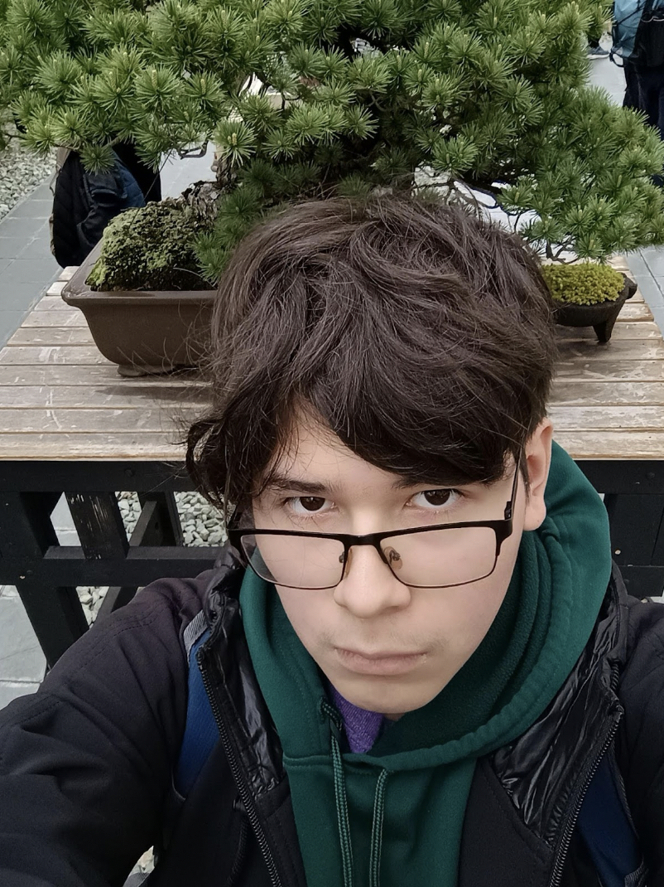

Hello!
About me
I came from Science Skills Center HS, and the reason why I came here to Full Stack because I really want to make a website and maybe even run a game. What really led to me is computer science in general. I started with a small idea of building a pc and make sure it works functionally. This also leds me more into wondering how people create websites using coding. Full stack development was the perfect class for me for understanding the basics of technology and I feel amazing by the aspects of technology and how things really work used by coding.
Interests
Recently I have been watching bleach and I already love the anime. I am trying to finish the bleach by May 2025 (Including Thousand Year Blood War). I really love watching anime whenever I am bored. I also read mangas after finishing the anime (Manwa aswell). All animes that I have watched so far are: Death note, Solo leveling, Chainsaw Man, and Demon Slayer.